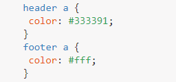

Селекторы
Селекторы, как уже упоминалось, указывают, какие элементы HTML будут стилизованы. Важно полностью понимать, как использовать селекторы и как они действуют.
-
Основные селекторы
- селекторы типа
- классы
- идентификаторы
- универсальный селектор
-
Основные термины
- объединение селекторов
- каскад
- приоритетность
- наследование
-
Дополнительные селекторы
- комбинированные селекторы
- селекторы атрибутов
ОСНОВНЫЕ СЕЛЕКТОРЫ
Селекторы типа
В качестве селектора выступает имя любого тега HTML, но без написания угловых скобок.
Например, если мы хотим задать стиль для всех элементов <div>, то мы должны использовать селектор div.
Классы
Классы позволяют выбрать элемент на основе значения атрибута class. Селекторы классов немного более конкретны, чем селекторы типа, так как они выбирают определённую группу элементов, а не все элементы одного типа.
Классы позволяют применять одинаковые стили сразу к разным элементам, используя то же значение атрибута class для нескольких разных элементов.
В CSS классы обозначаются с точкой впереди, за которой следует значение атрибута класса. Ниже селектор класса выбирает все элементы, содержащие значение awesome атрибута class, включая элементы <div> и <p>.
К имени класса предъявляются особые требования:
- класс не должен начинаться с цифры: .2block писать нельзя, но допустимо .block2;
- класс не должен содержать русские буквы, только латинские: .кнопка использовать нельзя, .knopka можно;
- в имени класса допустимо использовать дефис (-) и подчёркивание (_): .view-design-block и .search_form_button ;
- класс можно начинать с дефиса и подчёркивания: .__error__;
- классы чувствительны к регистру: .Red, .RED и .red — это всё разные имена.
Идентификаторы
Идентификаторы ещё точнее, чем классы, так как они нацелены только на один уникальный элемент за раз. Подобно тому, как селекторы классов используют значение атрибута class, идентификаторы используют значение атрибута id в качестве селектора.
Независимо от типа отображаемого элемента, значение атрибута id может быть использовано только один раз на странице. Если id присутствуют, то они должны быть зарезервированы для важных элементов.
В CSS идентификаторы обозначаются с символом решётки впереди, после чего идёт значение атрибута id. Здесь идентификатор выберет только элемент, содержащий атрибут id со значением shayhowe.
Для имён идентификаторов работают те же правила, что и для классов — имя не должно начинаться с цифры, содержать русские буквы и др.
Универсальный селектор
Иногда требуется установить одновременно один стиль для всех элементов веб-страницы, например, задать шрифт или начертание текста. В этом случае поможет универсальный селектор, который соответствует любому элементу веб-страницы.
Для обозначения универсального селектора применяется символ звёздочки (*).
В данном случае для всех элементов задаётся нормальное начертание текста. Таким образом, элементы с жирным начертанием по умолчанию (вроде <h1>) теряют свою «жирность».
Универсальный селектор, как правило, применяется для сброса CSS. Цель сброса — приведение стилей разных браузеров к одному виду. Для каждого элемента браузер задаёт стиль по умолчанию, при этом возможны небольшие различия в отображении элемента в разных браузерах. Чтобы убрать эти различия и применяется сброс. На деле вопрос, использовать сброс CSS или нет, спорный, каждый решает его по своему.
ОСНОВНЫЕ ТЕРМИНЫ
Объединение селекторов
Пока мы рассмотрели как использовать разные типы селекторов индивидуально, но мы также должны знать, как использовать эти селекторы вместе. Комбинируя селекторы мы можем быть более конкретными в том, какой элемент или группу элементов мы хотели бы выбрать.
Классы допустимо объединять с элементами. В этом случае селектор запишется следующим образом
Сперва пишется имя элемента, затем через точку без пробелов имя класса.
Селектор p.cite будет задавать стиль только для элементов <p> с классом cite.
В свою очередь стиль не будет применяться:
- к элементам <p> без какого-либо класса,
- к элементам <p> с любым другим классом,
- ко всем остальным элементам, даже с классом cite.
Объединение элемента и класса, как правило применяется для повышения приоритета стиля. Селектор p.cite имеет больший приоритет, чем .cite, а он в свою очередь больше, чем селектор элемента p. Таким образом: p.cite > .cite > p. Мы ещё вернёмся к этому вопросу в разделе про каскадирование.
Рассмотрим еще один пример, в котором изначально мы сделали наши даты красными:
Если мы захотим вместо этого, чтобы наши даты внутри <em> отображались синим цветом? Мы можем добавить следующее правило CSS:
em.date объединяет в себе:
- селектор тега em;
- селектор класса .date.
Он будет применяться только к элементам
<em class="date"></em>. Это не повлияет на другие .date или em.
Иерархия селекторов
Пробел в селекторе определяет отношение предок/потомок. Скажем, мы хотим, чтобы ссылки в нашем заголовке были красного цвета:
Это можно читать справа налево как: «выбрать все элементы <a>, которые находятся внутри элемента <header>». Это заставит все другие ссылки (которые не в заголовке) оставаться неизменными.
Пример посложнее
Мы хотим выбрать все элементы абзаца, которые находятся внутри элемента со значением атрибута класса hotdog и установить для них цвет фона как brown. Однако, если один из этих абзацев, случаем, содержит значение атрибута класса mustard, мы хотим установить его цвет фона как yellow. При этом, абзацы mustard содержатся еще и внутри других элементов разметки, для которых мы не хотим задавать этот стиль - нам требуется установить нужный цвет только внутри hotdog. Наши HTML и CSS могут выглядеть следующим образом:
Когда селекторы комбинируются они должны читаться справа налево. Самый крайний селектор справа, непосредственно перед открытой скобкой, известен как ключевой селектор. Он определяет, к каким именно элементам будут применяться стили. Любой селектор слева от ключевого будет служить уточнением.
Первый объединенный селектор .hotdog р, включает в себя два селектора: класс и селектор типа. Эти два селектора разделяются пробелом.
Ключевым селектором выступает селектор типа р, нацеленный на элементы абзаца. Поскольку этот селектор сочетается с классом .hotdog, полный комбинированный селектор выбирает только элементы абзаца р, которые находятся внутри элемента с классом .hotdog.
Второй объединенный селектор .hotdog p.mustard, включает в себя три селектора: два класса и один селектор типа.
Единственное различие между вторым и первым селекторами является добавление класса mustard в конце селектора абзаца. Поскольку новый класс mustard находится в правой части комбинированного селектора, то он ключевой, а все отдельные селекторы идущие перед ним теперь уточняющие.
Пробелы в селекторах
В предыдущем комбинированном селекторе, .hotdog p.mustard, есть пробел между классом .hotdog и селектором абзаца p, но не между селектором абзаца p и классом .mustard. Использование пробелов и отказ от них — это большая разница в селекторах.
Поскольку нет пробела между селектором абзацаp и классом .mustard, это значит что будут выбраны только абзацы с классом .mustard. Если бы селектор абзаца был удалён, а класс .mustard содержал пробелы с двух сторон, то был бы выбран любой элемент с классом .mustard, а не только абзацы.
Лучше всего не писать селектор типа перед селектором класса. Как правило, мы хотим выбрать любой элемент с данным классом, а не только один тип элемента. С учётом этого наш новый комбинированный селектор будет лучше писать как .hotdog .mustard.
Читаем комбинированный селектор справа налево — он нацелен на абзацы со значением атрибута класса mustard, который располагается внутри элемента с значением атрибута класса hotdog.
Пример возможных селекторов
Использование разных классов
К любому элементу одновременно можно добавить несколько классов, перечисляя их в атрибуте class через пробел. В этом случае к элементу применяется стиль, описанный в правилах для каждого класса. Поскольку при добавлении нескольких классов они могут содержать одинаковые стилевые свойства, но с разными значениями, то берётся значение у класса, который описан в CSS-коде ниже. В самом атрибуте class порядок перечисления классов роли не играет.
В примере показано использование разных классов для создания разноцветных кнопок. К элементу <button> добавляется класс btn, который определяет общий стиль кнопок, а цвет фона и текста отдельных кнопок меняется через классы btn-success, btn-info и btn-warning.
Также, мы спокойно можем сочетать class и id в одном элементе.
Каскад
В CSS все стили идут каскадом сверху вниз, что позволяет добавлять другой стиль или переписывать его, тем самым таблицы стилей развиваются.
Скажем, к примеру, что мы выбрали все элементы абзаца в верхней части нашего стиля и установили для них цвет фона orange и шрифт размером 24px. Затем в нижней части нашего стиля мы снова выбираем все элементы абзаца и устанавливаем для них цвет фона green

Поскольку селектор абзаца, который устанавливает зелёный цвет фона располагается после селектора абзаца, который задаёт оранжевый цвет фона, он будет иметь приоритет в каскаде. Все абзацы появятся на зелёном фоне. Размер шрифта останется 24 пикселя, потому что второй селектор абзаца не определил новый размер шрифта.
Каскадные свойства
Каскад, также, работает со свойствами внутри отдельных селекторов. Опять же, скажем, к примеру, что мы выбрали все элементы абзаца и установили для них цвет фона orange. Затем прямо ниже свойства background и его значения мы добавляем ещё одно свойство и значение, которое задаёт цвет фона green
Поскольку объявление зелёного цвета фона написано после объявления оранжевого цвета фона, как и прежде, наши абзацы будут отображаться на зелёном фоне.
Итак, мы выяснили, что все стили идут каскадом сверху нашей таблицы стилей до её низа. Есть, однако, случаи, когда каскад не так хорошо работает — порой, когда применяются различные типы селекторов и специфичность этих селекторов разбивает каскад.
Мы спокойно можем сочетать class и id в одном элементе, при этом стиль для идентификатора всегда имеет более высокий приоритет чем для класса, несмотря на то, что стиль класса расположен после стиля идентификатора.
Из примера выше, изначально идентификатор установил цвет фона зеленым. Однако, несмотря на то, что после него мы через стиль класса задали цвет фона красным, фон все-равно остается зеленым
Приоритетность
Элемент HTML может быть целью нескольких правил CSS. Воспользуемся простым абзацем в качестве примера:
Мы можем изменить этот абзац просто используя имя тега:
Можем воспользоваться именем класса:
Можем использовать идентификатор:

Поскольку браузер может выбрать только один цвет и применить его к этому абзацу, то он должен решить, какое правило CSS имеет приоритет над другими. Это называется приоритетом в CSS (или специфичностью).
В нашем примере абзац будет красным, потому что идентификатор более специфичен и, таким образом, более важен, чем другие селекторы.
Вычисление специфичности селекторов
Есть один быстрый способ выяснить, насколько правило CSS «сильное», путём вычисления специфичности селекторов:
- идентификаторы стоят 100;
- классы стоят 10;
- селекторы тега стоят 1.
Селектор с наивысшим «счётом» будет преобладать, независимо от порядка, в котором появляются правила CSS.
- Правило #introduction { color: red; } является более специфичным, чем другие, потому что идентификаторы должны быть уникальными по всей веб-странице, таким образом, может быть только один целевой элемент.
- .message { color: green; } будет нацелен на любой HTML-элемент с атрибутом class="message" и, следовательно, менее специфичен.
- То же самое относится и к p { color: blue; }, который может предназначаться для любого абзаца.
Специфичность объединенных селекторов
Вес специфичности объединенных селекторов может быть вычислен путём подсчёта каждого отдельного типа селектора в их комбинации.
Взглянем на пример объединенного селектора выше. Первый селектор .hotdog р, содержит селектор класса и селектор типа. Зная, что баллы класса это 0-1-0, а баллы селектора типа это 0-0-1, суммарные баллы будут 0-1-1. Это определяется путём суммирования каждого вида селектора.
Второй селектор .hotdog p.mustard, содержит два селектора класса и один селектор типа. У этого селектора суммарные баллы будут 0-2-1. 0 в первой колонке показывает нулевое число идентификаторов, 2 во второй колонке — два селектора класса, а 1 в последней колонке — один селектор типа.
Сравнивая два селектора, у второго селектора с двумя классами заметно более высокое значение веса специфичности и баллов. Как таковой, он будет иметь приоритет в каскаде. Если бы мы перевернули порядок этих селекторов в нашей таблице стилей, поместив более «тяжёлый» селектор выше «лёгкого» селектора, как показано здесь, вывод их стилей не будет затронут, в силу специфичности веса каждого селектора.
В общем, всегда держите вес специфичности селекторов в поле зрения. Чем больше растёт вес специфичности, тем более вероятно, что наш каскад сломается.
Как избежать конфликтов
Во время написания вашего CSS могут легко возникнуть противоречивые правила, в которых одно и то же свойство применяется несколько раз.
Чтобы избежать этого:
-
применяйте только классы:
- используйте .introduction вместо #introduction, даже если этот элемент появляется на вашей веб-странице только один раз;
-
избегайте применять несколько классов к одному элементу HTML:
- пишите не <p class="big red important">, а <p class="title">, который является семантически более описательным;
-
не используйте встроенные стили,
- такие как <div style="background: blue;">
Наследование в CSS
Скажем, мы хотим изменить цвет текста веб-страницы. Было бы скучно указывать цвет для каждого элемента HTML:
Распространение значения
Значение color может быть унаследовано от предка. Учитывая, что мы хотим изменить всю веб-страницу, то выберем предка всех элементов HTML — тег <body>:

Все дочерние элементы наследуют значение grey от их общего предка <body>, которое естественным образом охватывает все элементы.
Мы также можем использовать тег <html>.
Наследуемые свойства
Только несколько свойств CSS могут быть унаследованы от предков. Это в основном текстовые свойства:
- цвет текста;
- шрифт (семейство, размер, стиль, насыщенность);
- межстрочное расстояние.
Некоторые элементы HTML не наследуют от своих предков. Ссылки, к примеру, не наследуют свойство color.
ДОПОЛНИТЕЛЬНЫЕ СЕЛЕКТОРЫ
Комбинации селекторов
Разные селекторы можно комбинировать между собой, что в итоге позволяет нам сократить код и нацелить стиль на выбранные элементы, основываясь на их положении относительно друг друга.
Группирование селекторов (А, B)
Группирование применяет один и тот же стиль сразу к нескольким селекторам. Это делается для удобства представления и сокращения кода CSS. В примере 1 показана обычная запись, здесь для каждого селектора приводится свой набор стилевых свойств.
Из данного примера видно, что стиль для элементов <h1>, <h2>, <h3> содержит одинаковое значение font-family. Группирование как раз и позволяет установить одно свойство сразу для нескольких селекторов, как показано в примере 2.
В данном примере единое для всех селекторов свойство font-family применяется сразу к нескольким селекторам, а отдельные свойства уже добавляются к каждому селектору отдельно.
Селекторы группируются в виде списка, пункты которого разделяются между собой запятыми. В группу могут входить не только селекторы элементов, но также идентификаторы и классы.
Здесь свойство background применяется одновременно к элементу <h2> и к классам block и msg.
Дерево документа
Большинство комбинаций селекторов основано на их положении в дереве документа и относительно друг друга. Дерево документа — это схематичное изображение всех элементов, встречающихся в нашем коде HTML. Для иллюстрации возьмём произвольный документ, показанный в примере 3.
Дерево документа для этого HTML показано на рис. 1. Схема напоминает крону дерева из-за своей схожести с ветвями и листьями.
<!doctype> не считается элементом, поэтому его в расчёт не берём. Сама схема начинается с элемента <html>, он называется «корневой элемент». Все элементы связаны друг с другом сверху вниз и между ними есть следующие связи.
-
Предок
-
Элемент, внутри которого располагаются другие элементы с произвольным уровнем вложения.
- Для <p> предками будут <main>, <body> и <html>.
-
Элемент, внутри которого располагаются другие элементы с произвольным уровнем вложения.
-
Потомок
-
Элемент, расположенный внутри одного или нескольких предков.
- К примеру, <a> является потомком как <li>, так и <ul>, поскольку располагается внутри них.
-
Элемент, расположенный внутри одного или нескольких предков.
-
Родитель
-
Непосредственный предок элемента, который располагается выше на один уровень в дереве документа.
- <header> будет родителем для <ul>, но уже не для <li>, для него родителем будет выступать <ul>.
-
Непосредственный предок элемента, который располагается выше на один уровень в дереве документа.
-
Ребёнок (дочерний элемент)
-
Непосредственный потомок элемента, который располагается ниже на один уровень в дереве документа.
- К примеру, дочерним для <main> будет элемент <p>; для <ul> дочерними элементами выступают <li>, но не <a>. У родителя может быть произвольное число дочерних элементов, но у дочернего элемента только единственный родитель.
-
Непосредственный потомок элемента, который располагается ниже на один уровень в дереве документа.
-
Братья (сиблинги)
-
Элементы, расположенные на одной ветке и имеющие общего родителя, называются братскими или сиблинги, если пользоваться термином из генетики.
- Братскими являются элементы <header>, <main> и <footer>, а также <li>. Элементы <a> братскими не являются из-за того, что у них разные родители.
-
Элементы, расположенные на одной ветке и имеющие общего родителя, называются братскими или сиблинги, если пользоваться термином из генетики.
-
Смежные
-
Братские элементы, расположенные рядом друг с другом.
- Смежными будут элементы <header> и <main>, а также <main> и <footer>, но никак не <header> и <footer>, потому что они располагаются «через одного».
-
Братские элементы, расположенные рядом друг с другом.
Селекторы потомка (A B)
Эти селекторы также называются вложенными или контекстными. Такие селекторы состоят из базовых селекторов разделённых пробелом.
- Такую запись удобнее читать справа налево:
- стиль применяется к элементу <a>, который является потомком элемента <footer>.
В примере 4 показано изменение цвета ссылок, в зависимости от того, где они располагаются — вверху или внизу. Для изменения цвета ссылок вверху мы использовали селектор header a, а для ссылок внизу — footer a.

Пример 4. Цвет ссылок
Селекторов не обязательно должно быть только два, можно комбинировать произвольное количество.
Здесь серый фон добавляется к ячейкам таблицы <td> когда они располагаются внутри <thead>, а тот в свою очередь внутри элемента с классом tbl.
Дочерние селекторы (A > B)
Селекторы потомка выбирают всех заданных потомков указанного элемента, независимо от их уровня вложенности. Чтобы выбрать только дочерние элементы, между селекторами вставляется угловая скобка.
B)">
Данная запись означает применить стиль к элементу <h2>, который является дочерним по отношению к <section>. Для следующего фрагмента HTML красным цветом будет оформлен первый заголовок <h2>, поскольку только он непосредственно располагается внутри <section> и выступает его дочерним элементом.
B)">
Дочерние селекторы обычно применяются для ситуаций, когда одинаковые элементы вкладываются внутрь другого несколько раз, но выделить нужно не все, а только определённые элементы. В примере 5 показано создание меню, когда один <ul> располагается внутри другого. Чтобы стилизовать пункты списка первого уровня, не затрагивая остальные, и требуются дочерние селекторы.
Пример 5. Дочерние селекторы
Смежные селекторы (A + B)
Выбирает элемент B, который является смежным для элемента A, иными словами, идёт в коде сразу же после него. К примеру, следующая запись изменит цвет только первого абзаца после заголовка.
Смежные селекторы обычно применяются для стилизации полей формы или создания разных эффектов. В примере 6 текстовый абзац с классом hidden прячется с помощью свойства display со значением none. При наведении курсора мыши на абзац с классом more смежный с ним абзац с классом hidden становится виден. Подробнее об использовании :hover говорится в разделе про псевдоклассы.
Пример 6. Смежные элементы
Братские селекторы (A ~ B)
Выбирает все братские элементы B, которые идут в коде после элемента A. К примеру, следующая запись изменит цвет всех абзацев после заголовка.
В примере 7 при наведении курсора мыши на любую звёздочку, все остальные, которые располагаются правее неё, меняют цвет с серого на красный. Поскольку братские селекторы работают только для элементов справа, а не слева от указанного, то мы идём на хитрость и переворачиваем все звёздочки с помощью атрибута dir со значением rtl. Это меняет текст и расположение элементов справа налево.
Пример 7. Братские селекторы

Комбинации селекторов позволяют выделить элемент, расположенный справа или внутри заданного элемента, но никак не родительский элемент или элемент, расположенный слева.
Селекторы атрибутов
Многие элементы HTML различаются по своему действию в зависимости от того, какие в них задействованы атрибуты. Например, <input> может создавать кнопку, текстовое поле и другие элементы формы всего лишь за счёт изменения значения атрибута type. При этом добавление стиля к селектору input поменяет оформление одновременно у всех элементов <input>. Селекторы атрибутов позволяют выбрать нужные элементы и установить для них стиль по наличию определённого атрибута или его значения.
Рассмотрим несколько наиболее популярных вариантов применения селекторов атрибутов.
Селектор [attribute]
Устанавливает стиль для элементов, у которых присутствует указанный атрибут. Значение атрибута при этом не учитывается. В качестве селектора используются квадратные скобки, внутри которых пишется произвольный атрибут.
![Селектор [attribute]](./img/css-sintacsis-img/Screenshot_54.png)
Здесь для всех элементов, к которым добавляется атрибут title, задаётся нижнее точечное подчёркивание синего цвета.
Чтобы сузить число элементов, перед квадратными скобками ставится имя элемента без пробелов.
В данном случае выбираются только элементы <a>, к которым добавлен атрибут target с произвольным значением.
В примере 1 показано изменение стиля элемента <textarea>, когда к нему добавляется атрибут readonly.
Пример 1. Вид элемента в зависимости от его атрибута

В данном примере селектор textarea устанавливает стиль для всех элементов <textarea>, а селектор textarea[readonly] для элементов <textarea>, к которым добавлен атрибут readonly.
Учтите, что атрибут у элемента должен присутствовать явно. К примеру, для <input> атрибут type по умолчанию равен text, но селектор input[type] будет работать для <input type="text"> и не будет для <input>, хотя сами элементы отображаются одинаково.
Селектор [attribute="value"]
Устанавливает стиль для элемента, когда задано указанное значение атрибута. Например, для <input>, у которого значение type равно checkbox, селектор запишется следующим образом.
Писать кавычки при этом не обязательно, но только если значение содержит латинские буквы и без пробелов. Так что input[type=checkbox] тоже работает.
Значения чувствительны к регистру, поэтому в CSS пишите их так же, как они написаны в HTML.
В примере 2 показано как установить стиль для элемента <input>, основываясь на его значении.
Пример 2. Изменение поля формы
Селекторы атрибутов можно применять вместо классов, поскольку [class="block"] и .block выберут одни и те же элементы.
Селектор [attribute^="value"]
Устанавливает стиль для элемента, когда значение атрибута начинается с указанного текста. К примеру, для выбора всех элементов, у которых класс начинается на view, селектор будет следующий.
При этом будут выделены элементы с классом view, view-block, viewer, но не block-view.
В примере 3 мы делаем жирными ссылки, адреса которых начинаются с ключевого слова http://. Это позволяет обозначить ссылки, ведущие на другие сайты.
Пример 3. Изменение стиля ссылок
Селектор [attribute*="value"]
Позволяет выбрать элементы, у которых значение атрибута содержит указанный текст. При этом текст может быть в начале, в середине или в конце. К примеру, для выбора всех элементов, у которых класс содержит view, используется следующая запись.
При этом цвет изменится для элементов с классом view, view-block, viewer, overview или block-view.
В примере 4 показано изменение стиля ссылок, в атрибуте href которых встречается слово «github». Для таких ссылок мы добавляем иконку, показывающую принадлежность к GitHub.
Пример 4. Стиль для сайта GitHub
Селектор [attribute$="value"]
Устанавливает стиль для элемента, когда значение атрибута оканчивается указанным текстом. К примеру, для выбора всех элементов, у которых класс завершается view, используется следующая запись.
При этом цвет изменится для элементов с классом view, block-view, overview, но не view-block или viewer.
Таким способом можно автоматически разделять стиль для ссылок на сайты домена ru и для ссылок на сайты других доменов вроде com, как показано в примере 5.
Пример 5. Стиль для разных доменов
В данном примере содержатся две ссылки, ведущие на разные домены — com и ru. При этом к каждой такой ссылке с помощью стилей добавляется своя фоновая картинка. Стилевые свойства будут применяться только для тех ссылок, атрибут href которых оканчивается на «.ru» или «.com». Заметьте, что добавив к имени домена косую черту (//ya.ru/) или адрес страницы (//ya.ru/search), мы изменим тем самым окончание и стиль применяться уже не будет.
Селекторы атрибутов допустимо комбинировать между собой, чтобы выбрать элементы, содержащие два и более атрибута. К примеру, для элемента <input>, у которого есть атрибут type со значением password и атрибут required, запись будет следующей
Пробелы между селекторами атрибутов не ставятся, всё пишется в одну строку.